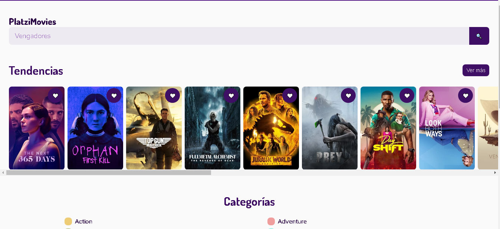

Api de Rick and Morty

Se utilizaron herramientas para configurar nuestro código y que este pudiera correr en cualquier navegador.La herramienta de Webpack para poder obtener un entorno de desarrollo y al mismo tiempo poder correr nuestra app en producción, también se utilizó el Transpilador Babel esta es una herramienta que nos permite transformar nuestro código JS de última generación (o con funcionalidades extras) a JS que cualquier navegador o versión de Node.js puedice compilar.
La SPA consume la API de Rick and Morty y otras propiedades que nosofrece el navegador tales como Locatión para saber en qué Url estamos , al mismo tiempo la propiedad Location.hash que contiene un '#' seguido por el fragmento identificador de la URL. Es así como podemos sabersi nos encontramos en el Home de la app o si nos encontramos seleccionando un personaje o si estamos en la pagina 404 o que pudiese haber un error y esta se active..
PlatziMovies

La página web PlatziMovies es una Api Rest que conecta con los servicios de The Movie Database (TMDB) y de esta manera obtener Información de una vasta cantidad de películas.
La API implementa herramientas y apis que nos brinda los navegadores, como por ejemplo la api de Axios es una biblioteca de JavaScript muy popular que puede utilizar para realizar solicitudes HTTP, que funciona tanto en el navegador como en Node.js, otra de las apis que implementa nuestro sitio web es la del Intersectio Observer API que nos ayuda a identificar si un elemento es visible o no, para el render de las imágenes y que estas no carguen de manera abrupta utilizamos el Skeleton Loading junto a lo que vendría siendo una carga perezosa o Lazy Loading intersectadas por nuestra api de Intersection Observer y que estas carguen a medida que se hacen visibles en la pantalla para una mejor experiencia de usuario y mejora de Performance de nuestro sitio web.
La página web TheMovie con tiene diversas secciones utilizando la propiedad Locatión del navegador para saber la ruta en la que estamos y además tiene el botón de like ❤ para poder agregar las películas a la sección de favoritos
La navegación de las peliculas se hace con la herramienta del Infinity Scroll o Scroll Infinito herramienta que nos provee el navegador.